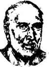

Heart Of a Storm
A powerhouse to be reckoned with in the intellectual space of Kerala, Balakrishnan was an author par excellence, a committed and daring journalist, a fiery orator and above all a great human being.He authored one of best and most widely read novels of the language,a controversial and original history of the state,and a series of studies unparalleled in their depth and understanding of the subject and originality of vision.He never took the beaten tracks in whatever he did. His vision and learning took him through unchartered territories which he conquered with his characteristic mastery.
 |
Two of his books were among the most notable literary work in malayalam in the last 50 Years by Malayala Manorama Daily the leading Malayalam News Paper - Details Click Here | ||
His journey as an author : His journey as an author starts from ‘Narayana ‘Guru’. A comprehensive work on the great reformer and spiritual leader of Kerala, the book not only depicts a great man in his true dimensions, it also amply points to the great mind and understanding of Balakrishanan who would have been hardly 23 years at the time. Most of Balakrishnan’s works are critical works. His studies on Chandu Menon (the first widely accepted Malayali novelist), the art of poetry studied through Kumaran Asan (the doyen of Malayalam literature) Vyasa Bharath & Ezhuthachan (the father of Malayalam poetry) and the art of the novel are unparelled works that enriched critical literature.
An avid reader, history fascinated him. Kerala history interested him tremendously. He found that there was a disconnect between what the existing writings on history sought to project, and what he saw of Kerala from the old literature, travelogues, and other first hand sources that is used to study history.In his writings he first dealt with Kerala history in the anthology ‘Narayana Guru’ on the great social reformer of Kerala who changed the face of its caste ridden society.To fully comprehend the greatness of the man and the work he did, the history of Kerala in the 18th and 19th centuries are studied as a back drop. He brushes with Kerala history again to study why Tipu Sultan, an able ruler and administrator is only perceived as an aggressor and religious fanatic in our writings. The culmination of these studies over 3 decades was his work on social history ‘Jaathivyavasthayum Kerala Charitravum’ (The Caste System and History of Kerala). The book created a furore in the ‘historical circles’ and generated widespread interest and discussion on Kerala history. The unrealistic and imaginative flourishes that were passed off as history were debunked with this single work. The people and their history were studied within the reality frame work of the caste system, agriculture, commerce, administrative set up etc. It is a seminal work that deals with various aspects of Kerala’s history including the development of the Malayalam language.
However what catapulted him as a popular writer was his second novel ‘Ini Njan Urangatte’ (And Now Let Me Sleep), a novel that subsists on the Mahabharath. The book is unparalleled in its lofty language, imagery and depth and is considered one of the best classics in Indian Literature. The novel is the story of Karna as seen through the eyes of Draupadi. A work originating from the Vyasabharatha (Mahabharath), it has caught the stylised language and mood of the great epic. It gives a new intellectual and spiritual dimension to the recreated Draupadi (the wife of the Pandavas). Her painful story unveils around the unacknowledged eldest Pandava, Karna, born to maiden Kunti from the sun god. The novel maintains the original story, epic atmosphere, events and characters which distinguishes it from other works based on Mahabharatha. It won him the Kerala Sahitya Akademi award, Sahitya Pravarthaka Benefit Fund award and the prestigious Vayalar award given in honour of the poet Vayalar Rama Varma,who was immortalised in Malayalam cinema by his beautiful lyrics.
‘Ini Njan Urangatte’ was quite a departure from his first novel ‘Pluto’ the story of his dog set in the back drop of his native village of Edavanakkad peopled by his friends and relatives.
While his extensive interests resulted in full fledged books, his numerous other interests resulted in various articles. No serious attempts were made to preserve the articles he wrote. So, many of these were lost after their first publication. Some of these were complied and published in his life time ‘Mayatha Sandhyakal’ (Unfading Twilights) and ‘Nidra Sancharangal’ (Sleep Walkings). These were combined and brought out as Balakrishnante Lekhanangal (Articles of Balakrishnan) in 2005. A subsequent collection of articles were published as ‘Keraleeyathayum Mattum’ (The Essence of Kerala etc).
As on date Balakrishnan has 11 published books to his credit.